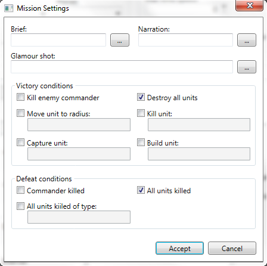

The Mission Settings dialog is where you can modify all of the map's campaign specific settings. The dialog is split into three sections: general, victory conditions, and defeat conditions.
At the top we have three fields: brief, narration, and glamour shot.
Brief
The brief is the text seen in the mission briefing menu. You'll need to input the text file containing the brief, or you can use the
small browse button to the right of the text box.
Narration
The narration is the name of the .wav file. This is played during the mission briefing screen. Like the brief, you can use the browse
button to select it.
Glamour shot
This is the name of a .pcx image file. The image will be displayed once the player wins the mission.
Here you can define all of the objectives that the player will need to achieve to win the mission.
Kill enemy commander
As it suggests, complete this objective by kiiling the enemy's commander.
Destroy all units
As with above, just destroy every single enemy unit to complete the objective.
Move unit to radius
To achieve this, the player will need to move a unit to the specified area. For this objective you'll need to input the
name of the unit, the x/y coordinate, and the radius size of the area you want the unit to move to. The format is: UNITNAME, X, Y, SIZE.
Kill unit
The player will need to kill a certain number of a particular unit type. You'll need to input the unit's name and the number of
units to destroy in the format UNITNAME, QUANTITY.
Capture unit
The player will need to capture the specified unit. All you need to input here is the unit's name.
Build unit
The player will simply need to build the specified unit. Like capture unit above, you only need to input the unit's name.
All mission failure states are defined here. The player will only need to "achieve" one of these (if there's more than one) to fail the mission.
Commander killed
Like it says, the player is defeated if they let their commander die.
All units killed
Like commander killed above, the player is defeated if they lose all of their units.
All units killed of type
The player loses if all units of a particular type are killed. You simply need to input the unit's name.